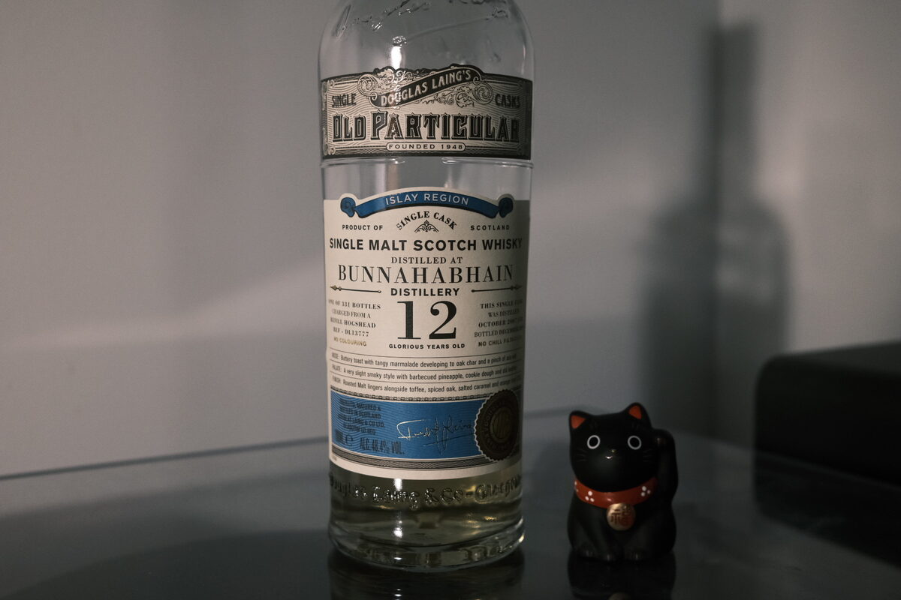

Bunnahabhain 2007 Douglas Laing 12 years 48.4% (refill hogshead)
Refill hoggy Bunnahabhain from Douglas Laing’s Old Particular series. Cask reference DL13777.
Colour Straw.
Nose Big whack of malt. Then into bananas, caramel… banana sundae. Cinnamon, vanilla, muesli. Salty and briney: coastal. Apples and pears stewing away. With water: some banana skins? There’s a very slight rubbery scent. Very pleasing.
Palate Sweet and lightly herbal malt. Creamy texture. Bananas and caramel are back again – definitely a banana cream sundae. Easy drinking. Salted caramel, dulce de leche. A waft of coconut, a little jammy and some sponge cake: lamingtons.
Finish Warming. Surprise! Bananas and caramel. Will it ever end? Hope not. Shortbread, perhaps some cheesecake. Creamy and thick. Malty. A tinge of coffee and textured milk. A little grassy. Quite long. With water, the softest hint of rubber, perhaps ash.
Comments Malt forward. Eating a banana caramel sundae at the beach. Very pleasant. 86/100.

Posted by Dominic on 13 May 2021